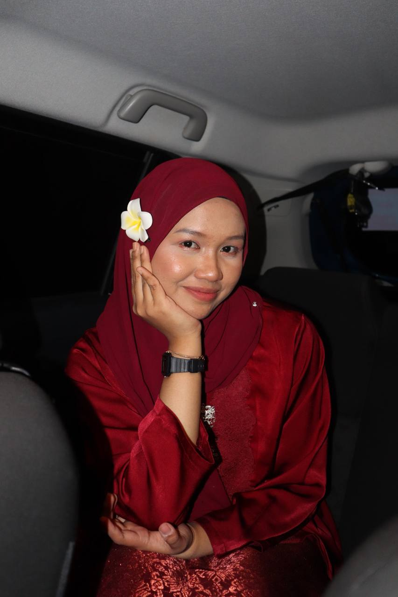
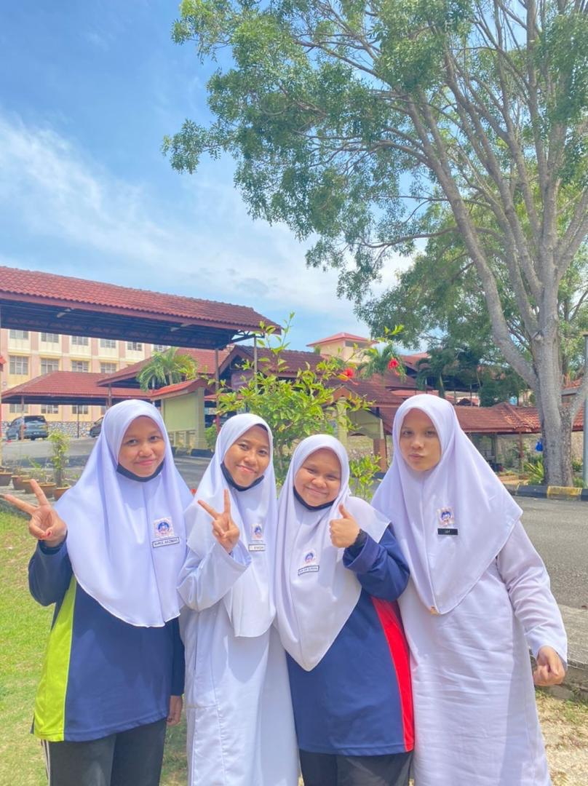

About MeHello! My name is Nurul Hazimah Binti Rahmat, but everyone calls me Zima. I'm an ambivert who enjoys both socializing and alone time. I love indoor activities like playing badminton and watching movies, and I'm a sunset lover. I have strong communication and problem-solving skills and enjoy learning new tech tools. My dream is to make a meaningful impact in my field while balancing adventures and time with loved ones. Go up! |
Nurul HazimahI was born on May 3, 2004, in Hospital Tuanku Jaafar, and I am now 20 years old. I have 4 siblings in my family and i'm the second one.I enjoy travel, listening to music, reading occasionally, and currently, I am in my final year of my diploma program. Here’s a simple video that gives a glimpse into my life. Go up! |

Education & SkillsI began my educational journey at Tadika Pasti Al-Iman for kindergarten, followed by Sekolah Kebangsaan Kampung Baru Si Rusa for primary school. Transitioning to secondary education, I specialized in business at SMK Kampung Baru Si Rusa. After graduating high school, I pursued a diploma at UiTM Rembau. Grateful for the privilege of education, I value the support of my family and mentors who have guided me along this path of learning and growth.Here is my resume. Go up!Favourite SongGo up! |
WELCOME TO MY PERSONAL WEBSITE
"You are the author of your own story, weaving moments, dreams, and connections into a masterpiece uniquely yours."